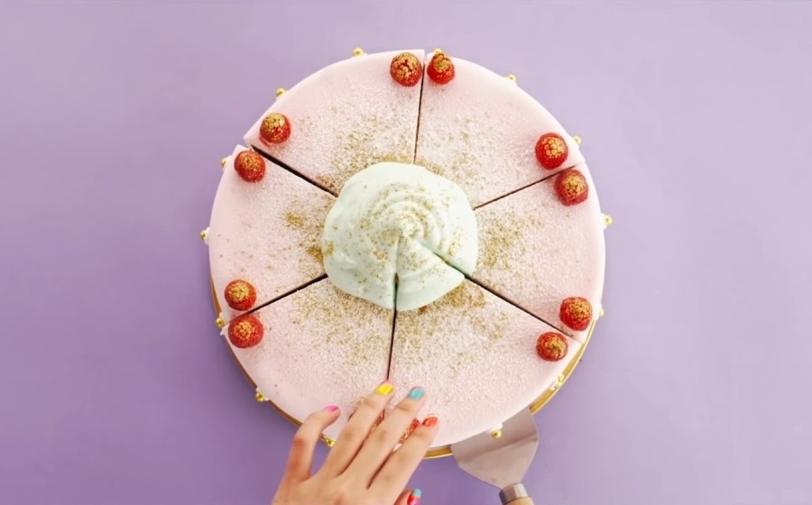

What is an ice cream cake?

이는 르네상스 시대에 탄생한 것이었다.
빅토리아 시대에는 bombes라고 불리는 디저트를 만들어 먹었다. 이는 장식적인 틀 안에 아이스크림과 과일을 넣어 만든 것이었다. 때때로 이 디저트는 케이크나 비스킷과 같이 나왔다. 아이스크림 케이크 요리법으로서 1870년대에 작성된 것이 발견되기도 하였다.
아이스크림 케이크는 생일 케이크로서 사용될 수 있다.
오늘날, 아이스크림 케이크는 대다수의 아이스크림 가게에서 구매할 수 있다. 틴 루프 파이와 같은 변종이 많이 출시되어 있다.